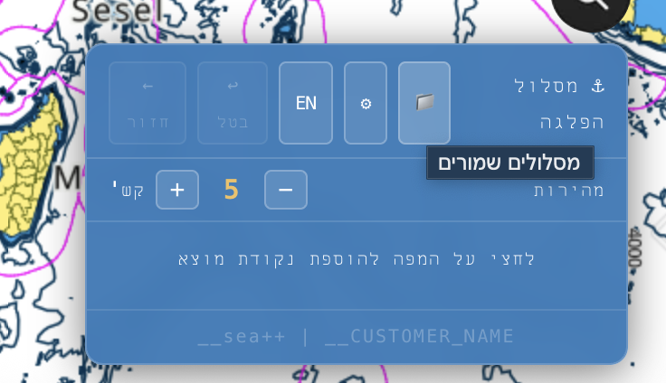
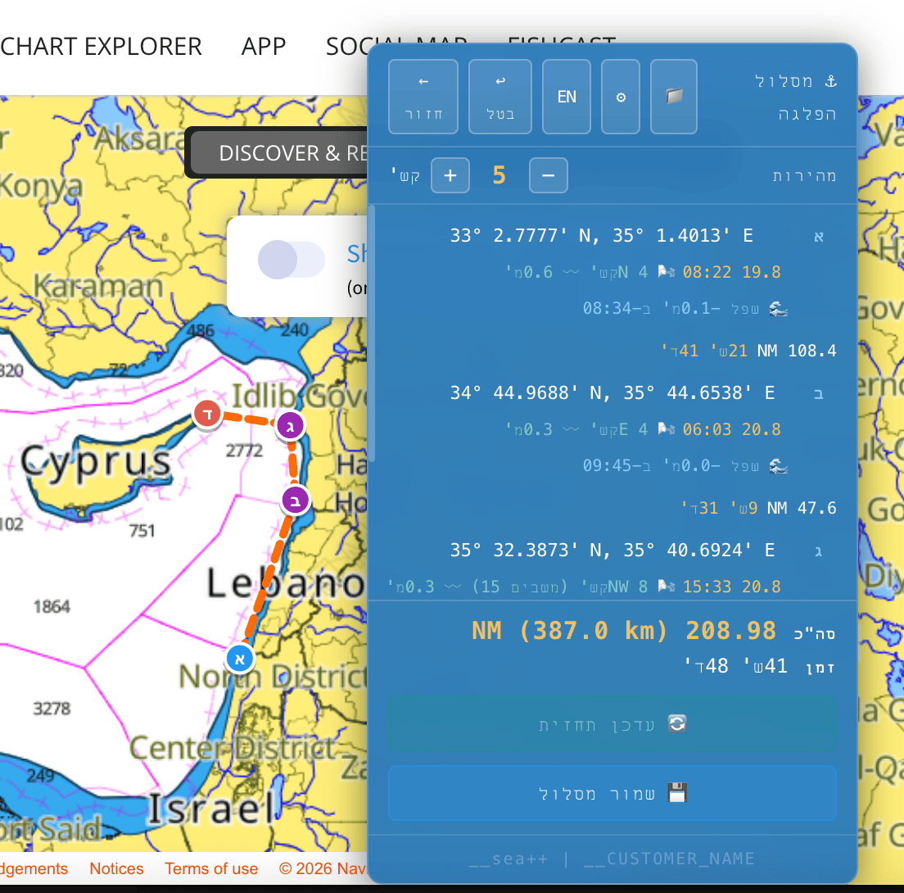
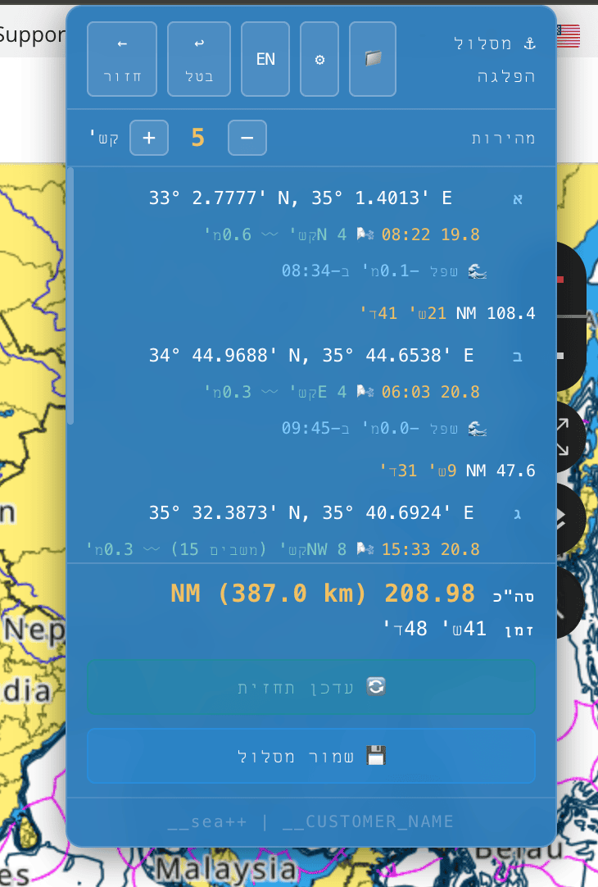
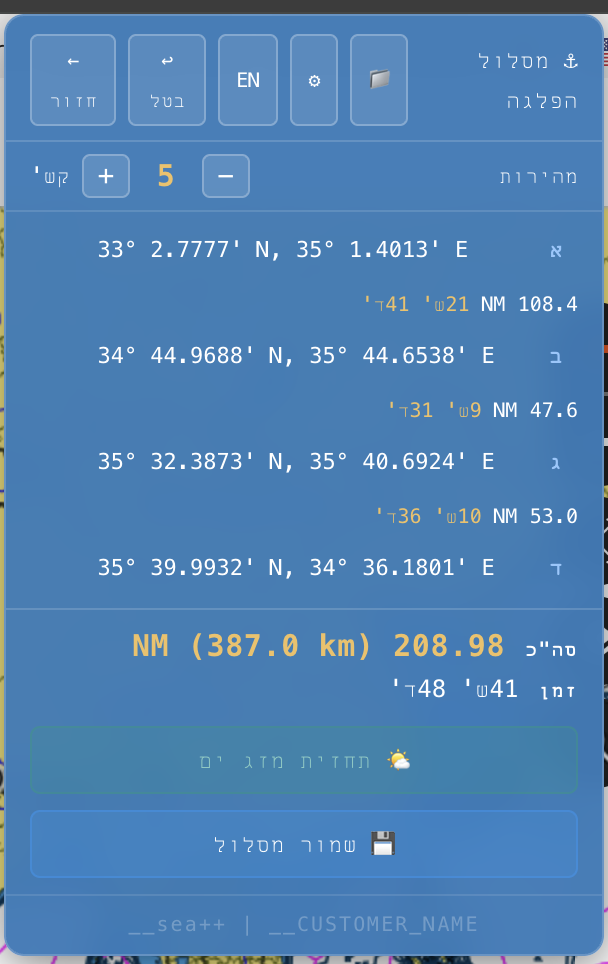
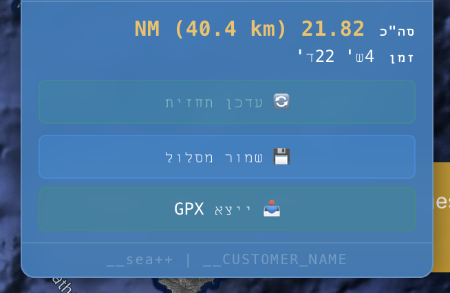

תוכנות בתחום הימי
תוסף לתכנון מסלול ימי

התוסף נועד כדי לתכנן מסלול הפלגה או כל פעילות ימית אחרת.
התוסף עובד על אתר המפות C-Map ועל המפות באתר Navily.
תכנון המסלול נעשה ע"י לחיצות על המפה באמצעות העכבר, כל לחיצה היא נקודה במסלול (חשוב לשים לב שלא עולים על היבשה).

החל מהנקודה השניה ניתן לראות את הפרטים הבאים:
- מרחק בין הנקודות (כתלות במהירות ההתקדמות, ביחידות של קשר).
- תחזית מזג אוויר צפויה בזמן הגעה ליעד.
- גאות או שפל בזמן ההגעה ליעד.

פעולות נוספות שאפשר לבצע
- שינוי מהירות כלי השיט - התוסף יתעדכן אוטומטית בזמני ההגעה (המרחק כמובן לא משתנה).
- שמירת מסלול, טעינת מסלול, עדכון מסלול ועדכון תחזית מזג אוויר.
- ממשק עברית ואנגלית.
הדרך היעילה ביותר לעבוד עם התוסף
לפני יציאה לחו"ל, לבנות מסלול, לשמור אותו. הוא יבנה עם התאריכים הנוכחיים.
יום לפני או בבוקר ההפלגה, לטעון את המסלול, הוא יתאים את עצמו לתאריכים הנוכחיים, ויעדכן גם את התחזית, גאות ושפל בהתאם.

התקנת התוסף
התקנת התוסף נעשית על דפדפן כרום.
לאחר ההתקנה יש צורך לבצע עדכון חד פעמי על מנת לראות את כל הנתונים.
בנוסף לעבודה עם כרום (על המחשב), ניתן לייצא קובץ GPX, ולהעלות את המסלול/ים ל-Navionics בנייד.
יחד עם התוסף יישלח קובץ הדרכה מפורט אודות השימוש בתוסף.

עלות התוסף: תשלום חד פעמי של 100 ש"ח.
(לחברי מועדון או תלמידי סיילור 20% הנחה).
אפליקציה לניהול סירה
תוכן בדרך... (:
תוכנות אלו כוחן יפה לפעילות ימית, כמו הימאית שאני.
ביכולתי להתאים מוצר דומה גם עבור פעילות יבשתית, או ליצור תוסף עבור אתר שיעזור לך לעבוד בצורה נוחה ויעילה יותר, לפי דרישתך.